生成时间：2026-05-11 15:05:30
current_full: Current stack: enhanced MILP + preserve-greedy target builder + V3 phase greedy transition.placement_milp_original: Ablate placement: notebook original MILP without option pruning, elastic objective, warm-start hooks, or previous-state input.placement_greedy_two_phase: Ablate placement: notebook-style two-phase greedy placement, current target and transition.placement_simulated_annealing: Ablate placement: notebook-style simulated annealing over two-phase template choices.current_full: Current stack: enhanced MILP + preserve-greedy target builder + V3 phase greedy transition.target_no_preserve: Ablate target preservation: ignore previous layout when materializing target state.target_beam_preserve: Ablate target search: notebook preserve-first beam solver.target_exact_milp_templates: Ablate target rewrite/search: use exact MILP template list and first physical realization.current_full: Current stack: enhanced MILP + preserve-greedy target builder + V3 phase greedy transition.transition_serial_v0: Ablate transition: execute one root transition per iteration.transition_drain_v2: Ablate transition scoring: drain-aware non-conflicting groups without future Parallel-DAG.transition_full_plan_v2: Ablate transition granularity: execute the whole full plan each iteration.current_full: Current stack: enhanced MILP + preserve-greedy target builder + V3 phase greedy transition.placement_milp_original: Ablate placement: notebook original MILP without option pruning, elastic objective, warm-start hooks, or previous-state input.placement_greedy_two_phase: Ablate placement: notebook-style two-phase greedy placement, current target and transition.placement_simulated_annealing: Ablate placement: notebook-style simulated annealing over two-phase template choices.target_no_preserve: Ablate target preservation: ignore previous layout when materializing target state.target_beam_preserve: Ablate target search: notebook preserve-first beam solver.target_exact_milp_templates: Ablate target rewrite/search: use exact MILP template list and first physical realization.transition_serial_v0: Ablate transition: execute one root transition per iteration.transition_drain_v2: Ablate transition scoring: drain-aware non-conflicting groups without future Parallel-DAG.transition_full_plan_v2: Ablate transition granularity: execute the whole full plan each iteration.| variant | completed_all | first_failed_stage | first_failure_phase | first_failure_reason | max_gpu_count | stage0_gpu_count | stage1_gpu_count | stage2_gpu_count | stage3_gpu_count | iterations | coarse_root_actions | fine_actions | configures | clears | placement_elapsed_sec | target_build_elapsed_sec | transition_sim_elapsed_sec | algorithm_wall_sec | estimated_hardware_sec |
|---|---|---|---|---|---|---|---|---|---|---|---|---|---|---|---|---|---|---|---|
| current_full | True | 9 | 6 | 9 | 6 | 8 | 12 | 32 | 97 | 13 | 14 | 0.2862 | 1.7971 | 0.0353 | 2.5124 | 1640.2000 | |||
| placement_milp_original | True | 9 | 6 | 9 | 6 | 8 | 17 | 50 | 126 | 14 | 15 | 6.0572 | 3.7765 | 0.0575 | 10.1418 | 1787.8000 | |||
| placement_greedy_two_phase | True | 16 | 8 | 16 | 8 | 14 | 18 | 79 | 194 | 26 | 21 | 60.5956 | 3.3596 | 0.0690 | 64.2558 | 3221.6000 | |||
| placement_simulated_annealing | True | 11 | 8 | 11 | 7 | 9 | 12 | 44 | 143 | 17 | 17 | 61.6914 | 2.1965 | 0.0445 | 64.1617 | 2154.2000 |
| variant | completed_all | algorithm_wall_sec | estimated_hardware_sec | fine_actions | iterations | first_failed_stage | first_failure_reason |
|---|---|---|---|---|---|---|---|
| current_full | True | 2.5124 | 1640.2000 | 97 | 12 | ||
| placement_milp_original | True | 10.1418 | 1787.8000 | 126 | 17 | ||
| placement_greedy_two_phase | True | 64.2558 | 3221.6000 | 194 | 18 | ||
| placement_simulated_annealing | True | 64.1617 | 2154.2000 | 143 | 12 |
| variant | completed_all | first_failed_stage | first_failure_phase | first_failure_reason | max_gpu_count | stage0_gpu_count | stage1_gpu_count | stage2_gpu_count | stage3_gpu_count | iterations | coarse_root_actions | fine_actions | configures | clears | placement_elapsed_sec | target_build_elapsed_sec | transition_sim_elapsed_sec | algorithm_wall_sec | estimated_hardware_sec |
|---|---|---|---|---|---|---|---|---|---|---|---|---|---|---|---|---|---|---|---|
| current_full | True | 9 | 6 | 9 | 6 | 8 | 12 | 32 | 97 | 13 | 14 | 0.2862 | 1.7971 | 0.0353 | 2.5124 | 1640.2000 | |||
| target_no_preserve | True | 9 | 6 | 9 | 6 | 8 | 23 | 80 | 226 | 21 | 21 | 0.2345 | 4.8743 | 0.0773 | 5.4483 | 2706.6000 | |||
| target_beam_preserve | True | 9 | 6 | 9 | 6 | 8 | 23 | 49 | 120 | 13 | 14 | 0.2177 | 49.5404 | 0.0645 | 50.0808 | 1663.2000 | |||
| target_exact_milp_templates | True | 9 | 6 | 9 | 6 | 8 | 11 | 46 | 156 | 18 | 19 | 0.2366 | 0.0057 | 0.0398 | 0.5453 | 2290.2000 |
| variant | completed_all | algorithm_wall_sec | estimated_hardware_sec | fine_actions | iterations | first_failed_stage | first_failure_reason |
|---|---|---|---|---|---|---|---|
| current_full | True | 2.5124 | 1640.2000 | 97 | 12 | ||
| target_no_preserve | True | 5.4483 | 2706.6000 | 226 | 23 | ||
| target_beam_preserve | True | 50.0808 | 1663.2000 | 120 | 23 | ||
| target_exact_milp_templates | True | 0.5453 | 2290.2000 | 156 | 11 |
| variant | completed_all | first_failed_stage | first_failure_phase | first_failure_reason | max_gpu_count | stage0_gpu_count | stage1_gpu_count | stage2_gpu_count | stage3_gpu_count | iterations | coarse_root_actions | fine_actions | configures | clears | placement_elapsed_sec | target_build_elapsed_sec | transition_sim_elapsed_sec | algorithm_wall_sec | estimated_hardware_sec |
|---|---|---|---|---|---|---|---|---|---|---|---|---|---|---|---|---|---|---|---|
| current_full | True | 9 | 6 | 9 | 6 | 8 | 12 | 32 | 97 | 13 | 14 | 0.2862 | 1.7971 | 0.0353 | 2.5124 | 1640.2000 | |||
| transition_serial_v0 | True | 9 | 6 | 9 | 6 | 8 | 32 | 32 | 97 | 13 | 14 | 0.2277 | 1.8270 | 0.0884 | 2.4150 | 1640.2000 | |||
| transition_drain_v2 | True | 9 | 6 | 9 | 6 | 8 | 12 | 32 | 97 | 13 | 14 | 0.2148 | 1.8690 | 0.0345 | 2.3712 | 1640.2000 | |||
| transition_full_plan_v2 | True | 9 | 6 | 9 | 6 | 8 | 8 | 32 | 97 | 13 | 14 | 0.2271 | 1.8939 | 0.0303 | 2.4023 | 1640.2000 |
| variant | completed_all | algorithm_wall_sec | estimated_hardware_sec | fine_actions | iterations | first_failed_stage | first_failure_reason |
|---|---|---|---|---|---|---|---|
| current_full | True | 2.5124 | 1640.2000 | 97 | 12 | ||
| transition_serial_v0 | True | 2.4150 | 1640.2000 | 97 | 32 | ||
| transition_drain_v2 | True | 2.3712 | 1640.2000 | 97 | 12 | ||
| transition_full_plan_v2 | True | 2.4023 | 1640.2000 | 97 | 8 |
| variant | completed_all | first_failed_stage | first_failure_phase | first_failure_reason | max_gpu_count | stage0_gpu_count | stage1_gpu_count | stage2_gpu_count | stage3_gpu_count | iterations | coarse_root_actions | fine_actions | configures | clears | placement_elapsed_sec | target_build_elapsed_sec | transition_sim_elapsed_sec | algorithm_wall_sec | estimated_hardware_sec |
|---|---|---|---|---|---|---|---|---|---|---|---|---|---|---|---|---|---|---|---|
| current_full | True | 9 | 6 | 9 | 6 | 8 | 12 | 32 | 97 | 13 | 14 | 0.2862 | 1.7971 | 0.0353 | 2.5124 | 1640.2000 | |||
| placement_greedy_two_phase | True | 16 | 8 | 16 | 8 | 14 | 18 | 79 | 194 | 26 | 21 | 60.5956 | 3.3596 | 0.0690 | 64.2558 | 3221.6000 | |||
| placement_milp_original | True | 9 | 6 | 9 | 6 | 8 | 17 | 50 | 126 | 14 | 15 | 6.0572 | 3.7765 | 0.0575 | 10.1418 | 1787.8000 | |||
| placement_simulated_annealing | True | 11 | 8 | 11 | 7 | 9 | 12 | 44 | 143 | 17 | 17 | 61.6914 | 2.1965 | 0.0445 | 64.1617 | 2154.2000 | |||
| target_beam_preserve | True | 9 | 6 | 9 | 6 | 8 | 23 | 49 | 120 | 13 | 14 | 0.2177 | 49.5404 | 0.0645 | 50.0808 | 1663.2000 | |||
| target_exact_milp_templates | True | 9 | 6 | 9 | 6 | 8 | 11 | 46 | 156 | 18 | 19 | 0.2366 | 0.0057 | 0.0398 | 0.5453 | 2290.2000 | |||
| target_no_preserve | True | 9 | 6 | 9 | 6 | 8 | 23 | 80 | 226 | 21 | 21 | 0.2345 | 4.8743 | 0.0773 | 5.4483 | 2706.6000 | |||
| transition_drain_v2 | True | 9 | 6 | 9 | 6 | 8 | 12 | 32 | 97 | 13 | 14 | 0.2148 | 1.8690 | 0.0345 | 2.3712 | 1640.2000 | |||
| transition_full_plan_v2 | True | 9 | 6 | 9 | 6 | 8 | 8 | 32 | 97 | 13 | 14 | 0.2271 | 1.8939 | 0.0303 | 2.4023 | 1640.2000 | |||
| transition_serial_v0 | True | 9 | 6 | 9 | 6 | 8 | 32 | 32 | 97 | 13 | 14 | 0.2277 | 1.8270 | 0.0884 | 2.4150 | 1640.2000 |
| variant | scenario | completed | failure_stage | failure_reason | gpu_count | iteration_count | fine_action_count | configure_count | clear_count | placement_elapsed_sec | target_build_elapsed_sec | sim_transition_elapsed_sec | algorithm_wall_sec | estimated_hardware_sec |
|---|---|---|---|---|---|---|---|---|---|---|---|---|---|---|
| current_full | stage0 | True | 6 | 1 | 36 | 6 | 9 | 0.1266 | 0.1808 | 0.0026 | 0.5203 | 772.8000 | ||
| current_full | stage1 | True | 9 | 3 | 14 | 3 | 0 | 0.0533 | 0.6409 | 0.0083 | 0.7637 | 341.6000 | ||
| current_full | stage2 | True | 6 | 5 | 30 | 1 | 4 | 0.0531 | 0.4073 | 0.0152 | 0.5368 | 171.8000 | ||
| current_full | stage3 | True | 8 | 3 | 17 | 3 | 1 | 0.0533 | 0.5681 | 0.0093 | 0.6916 | 354.0000 | ||
| placement_milp_original | stage0 | True | 6 | 1 | 36 | 6 | 9 | 0.0465 | 0.4107 | 0.0024 | 0.5213 | 772.8000 | ||
| placement_milp_original | stage1 | True | 9 | 6 | 22 | 3 | 0 | 4.6103 | 1.8574 | 0.0183 | 6.5496 | 349.6000 | ||
| placement_milp_original | stage2 | True | 6 | 6 | 46 | 2 | 5 | 0.9272 | 0.0162 | 0.0225 | 1.0277 | 306.4000 | ||
| placement_milp_original | stage3 | True | 8 | 4 | 22 | 3 | 1 | 0.4732 | 1.4922 | 0.0142 | 2.0432 | 359.0000 | ||
| placement_greedy_two_phase | stage0 | True | 8 | 1 | 42 | 8 | 9 | 10.6924 | 1.9517 | 0.0032 | 12.7063 | 999.2000 | ||
| placement_greedy_two_phase | stage1 | True | 16 | 4 | 49 | 9 | 1 | 25.2362 | 0.2142 | 0.0157 | 25.5238 | 1041.2000 | ||
| placement_greedy_two_phase | stage2 | True | 8 | 4 | 42 | 0 | 8 | 7.8454 | 0.5001 | 0.0166 | 8.4201 | 109.2000 | ||
| placement_greedy_two_phase | stage3 | True | 14 | 9 | 61 | 9 | 3 | 16.8216 | 0.6936 | 0.0335 | 17.6056 | 1072.0000 | ||
| placement_simulated_annealing | stage0 | True | 8 | 1 | 42 | 8 | 9 | 14.5600 | 1.9192 | 0.0028 | 16.5414 | 999.2000 | ||
| placement_simulated_annealing | stage1 | True | 11 | 3 | 49 | 6 | 3 | 18.7908 | 0.0831 | 0.0151 | 18.9467 | 732.4000 | ||
| placement_simulated_annealing | stage2 | True | 7 | 4 | 39 | 1 | 5 | 11.2422 | 0.0601 | 0.0154 | 11.3738 | 191.2000 | ||
| placement_simulated_annealing | stage3 | True | 9 | 4 | 13 | 2 | 0 | 17.0984 | 0.1341 | 0.0112 | 17.2998 | 231.4000 |
| variant | scenario | completed | failure_stage | failure_reason | gpu_count | iteration_count | fine_action_count | configure_count | clear_count | placement_elapsed_sec | target_build_elapsed_sec | sim_transition_elapsed_sec | algorithm_wall_sec | estimated_hardware_sec |
|---|---|---|---|---|---|---|---|---|---|---|---|---|---|---|
| current_full | stage0 | True | 6 | 1 | 36 | 6 | 9 | 0.1266 | 0.1808 | 0.0026 | 0.5203 | 772.8000 | ||
| current_full | stage1 | True | 9 | 3 | 14 | 3 | 0 | 0.0533 | 0.6409 | 0.0083 | 0.7637 | 341.6000 | ||
| current_full | stage2 | True | 6 | 5 | 30 | 1 | 4 | 0.0531 | 0.4073 | 0.0152 | 0.5368 | 171.8000 | ||
| current_full | stage3 | True | 8 | 3 | 17 | 3 | 1 | 0.0533 | 0.5681 | 0.0093 | 0.6916 | 354.0000 | ||
| target_no_preserve | stage0 | True | 6 | 1 | 36 | 6 | 9 | 0.0624 | 0.1571 | 0.0024 | 0.2833 | 772.8000 | ||
| target_no_preserve | stage1 | True | 9 | 7 | 73 | 6 | 3 | 0.0619 | 1.4291 | 0.0242 | 1.5860 | 754.4000 | ||
| target_no_preserve | stage2 | True | 6 | 5 | 65 | 4 | 7 | 0.0539 | 1.9120 | 0.0204 | 2.0484 | 562.6000 | ||
| target_no_preserve | stage3 | True | 8 | 10 | 52 | 5 | 2 | 0.0564 | 1.3761 | 0.0304 | 1.5306 | 616.8000 | ||
| target_beam_preserve | stage0 | True | 6 | 1 | 36 | 6 | 9 | 0.0550 | 8.0666 | 0.0023 | 8.1854 | 772.8000 | ||
| target_beam_preserve | stage1 | True | 9 | 4 | 18 | 3 | 0 | 0.0528 | 25.9266 | 0.0104 | 26.0505 | 345.6000 | ||
| target_beam_preserve | stage2 | True | 6 | 14 | 44 | 1 | 4 | 0.0533 | 7.3240 | 0.0397 | 7.4906 | 185.8000 | ||
| target_beam_preserve | stage3 | True | 8 | 4 | 22 | 3 | 1 | 0.0566 | 8.2233 | 0.0121 | 8.3543 | 359.0000 | ||
| target_exact_milp_templates | stage0 | True | 6 | 1 | 36 | 6 | 9 | 0.0589 | 0.0014 | 0.0027 | 0.1259 | 772.8000 | ||
| target_exact_milp_templates | stage1 | True | 9 | 4 | 47 | 6 | 3 | 0.0546 | 0.0014 | 0.0138 | 0.1328 | 728.4000 | ||
| target_exact_milp_templates | stage2 | True | 6 | 2 | 45 | 3 | 6 | 0.0650 | 0.0015 | 0.0109 | 0.1476 | 426.0000 | ||
| target_exact_milp_templates | stage3 | True | 8 | 4 | 28 | 3 | 1 | 0.0581 | 0.0015 | 0.0124 | 0.1390 | 363.0000 |
| variant | scenario | completed | failure_stage | failure_reason | gpu_count | iteration_count | fine_action_count | configure_count | clear_count | placement_elapsed_sec | target_build_elapsed_sec | sim_transition_elapsed_sec | algorithm_wall_sec | estimated_hardware_sec |
|---|---|---|---|---|---|---|---|---|---|---|---|---|---|---|
| current_full | stage0 | True | 6 | 1 | 36 | 6 | 9 | 0.1266 | 0.1808 | 0.0026 | 0.5203 | 772.8000 | ||
| current_full | stage1 | True | 9 | 3 | 14 | 3 | 0 | 0.0533 | 0.6409 | 0.0083 | 0.7637 | 341.6000 | ||
| current_full | stage2 | True | 6 | 5 | 30 | 1 | 4 | 0.0531 | 0.4073 | 0.0152 | 0.5368 | 171.8000 | ||
| current_full | stage3 | True | 8 | 3 | 17 | 3 | 1 | 0.0533 | 0.5681 | 0.0093 | 0.6916 | 354.0000 | ||
| transition_serial_v0 | stage0 | True | 6 | 9 | 36 | 6 | 9 | 0.0623 | 0.1887 | 0.0231 | 0.3549 | 772.8000 | ||
| transition_serial_v0 | stage1 | True | 9 | 5 | 14 | 3 | 0 | 0.0538 | 0.6417 | 0.0135 | 0.7702 | 341.6000 | ||
| transition_serial_v0 | stage2 | True | 6 | 13 | 30 | 1 | 4 | 0.0590 | 0.4053 | 0.0379 | 0.5712 | 171.8000 | ||
| transition_serial_v0 | stage3 | True | 8 | 5 | 17 | 3 | 1 | 0.0525 | 0.5913 | 0.0139 | 0.7186 | 354.0000 | ||
| transition_drain_v2 | stage0 | True | 6 | 1 | 36 | 6 | 9 | 0.0537 | 0.2020 | 0.0023 | 0.3234 | 772.8000 | ||
| transition_drain_v2 | stage1 | True | 9 | 3 | 14 | 3 | 0 | 0.0533 | 0.6342 | 0.0079 | 0.7587 | 341.6000 | ||
| transition_drain_v2 | stage2 | True | 6 | 5 | 30 | 1 | 4 | 0.0537 | 0.4384 | 0.0159 | 0.5699 | 171.8000 | ||
| transition_drain_v2 | stage3 | True | 8 | 3 | 17 | 3 | 1 | 0.0541 | 0.5944 | 0.0084 | 0.7192 | 354.0000 | ||
| transition_full_plan_v2 | stage0 | True | 6 | 1 | 36 | 6 | 9 | 0.0536 | 0.1804 | 0.0022 | 0.2965 | 772.8000 | ||
| transition_full_plan_v2 | stage1 | True | 9 | 2 | 14 | 3 | 0 | 0.0595 | 0.6561 | 0.0098 | 0.7879 | 341.6000 | ||
| transition_full_plan_v2 | stage2 | True | 6 | 3 | 30 | 1 | 4 | 0.0537 | 0.4477 | 0.0117 | 0.5764 | 171.8000 | ||
| transition_full_plan_v2 | stage3 | True | 8 | 2 | 17 | 3 | 1 | 0.0604 | 0.6097 | 0.0066 | 0.7415 | 354.0000 |
| scenario | completed | failure_stage | failure_reason | gpu_count | chosen_templates | target_physical_templates | iteration_count | coarse_root_action_count | fine_action_count | configure_count | clear_count | placement_elapsed_sec | target_build_elapsed_sec | sim_transition_elapsed_sec | algorithm_wall_sec | estimated_hardware_sec |
|---|---|---|---|---|---|---|---|---|---|---|---|---|---|---|---|---|
| stage0 | True | 6 | 4+3+4+1+1+1+4+1+1+1+3+1+1+1+1+3+1+1+1+1+2+1+1+1+1+1 | 4+3+4+3+4+3+2+1+1+1+1+1+1+1+1+1+1+1+1+1+1+1+1+1+1+1 | 1 | 9 | 36 | 6 | 9 | 0.1266 | 0.1808 | 0.0026 | 0.5203 | 772.8000 | ||
| stage1 | True | 9 | 4+3+4+3+2+2+3+3+1+1+1+1+3+1+1+1+1+3+1+1+1+1+3+1+1+1+1+3+1+1+1+1+3+1+1+1+1 | 4+3+4+3+4+3+2+1+1+1+1+1+1+1+1+1+1+1+1+1+1+1+1+1+1+1+1+1+1+1+3+4+3+4+3 | 3 | 5 | 14 | 3 | 0 | 0.0533 | 0.6409 | 0.0083 | 0.7637 | 341.6000 | ||
| stage2 | True | 6 | 4+3+3+1+1+1+1+3+1+1+1+1+3+1+1+1+1+3+1+1+1+1+2+2+1+1+1 | 4+3+4+3+2+1+1+3+1+1+2+1+1+1+1+1+1+1+1+1+1+1+1+1+1+1+1+1 | 5 | 13 | 30 | 1 | 4 | 0.0531 | 0.4073 | 0.0152 | 0.5368 | 171.8000 | ||
| stage3 | True | 8 | 4+3+3+1+1+1+1+3+1+1+1+1+3+1+1+1+1+3+1+1+1+1+3+1+1+1+1+3+1+1+1+1+3+1+1+1+1 | 4+3+4+3+2+1+1+1+1+1+1+1+1+1+1+1+1+1+1+1+1+1+1+1+1+1+1+1+3+4+3+4+3 | 3 | 5 | 17 | 3 | 1 | 0.0533 | 0.5681 | 0.0093 | 0.6916 | 354.0000 |
| scenario | completed | failure_stage | failure_reason | gpu_count | chosen_templates | target_physical_templates | iteration_count | coarse_root_action_count | fine_action_count | configure_count | clear_count | placement_elapsed_sec | target_build_elapsed_sec | sim_transition_elapsed_sec | algorithm_wall_sec | estimated_hardware_sec |
|---|---|---|---|---|---|---|---|---|---|---|---|---|---|---|---|---|
| stage0 | True | 8 | 7+4+1+1+1+4+1+1+1+4+1+1+1+4+1+1+1+1+1+1+1+1+1+1+1+1+1+1+1+1+1+1+1+1+1+1+1+1 | 7+4+1+1+1+4+1+1+1+4+1+1+1+4+1+1+1+1+1+1+1+1+1+1+1+1+1+1+1+1+1+1+1+1+1+1+1+1 | 1 | 9 | 42 | 8 | 9 | 10.6924 | 1.9517 | 0.0032 | 12.7063 | 999.2000 | ||
| stage1 | True | 16 | 7+7+7+7+7+4+3+4+3+4+3+4+3+4+3+4+1+1+1+1+1+1+1+1+1+1+1+1+1+1+1+1+1+1+1+1+1+1+1+1+1+1+1+1+1+1+1+1+1+1+1+1+1+1 | 7+4+1+1+1+4+1+1+1+4+1+1+1+4+1+1+1+1+1+1+1+1+1+1+1+1+1+1+1+1+1+4+3+7+7+4+1+1+1+7+7+7+4+3+4+3 | 4 | 17 | 49 | 9 | 1 | 25.2362 | 0.2142 | 0.0157 | 25.5238 | 1041.2000 | ||
| stage2 | True | 8 | 7+4+1+1+1+4+1+1+1+4+1+1+1+4+1+1+1+4+1+1+1+1+1+1+1+1+1+1+1+1+1+1+1+1+1 | 7+4+1+1+1+4+1+1+1+4+1+1+1+4+1+1+1+1+1+1+1+1+1+1+1+1+1+1+1+1+1+4+1+1+1 | 4 | 29 | 42 | 0 | 8 | 7.8454 | 0.5001 | 0.0166 | 8.4201 | 109.2000 | ||
| stage3 | True | 14 | 7+4+3+4+3+4+3+4+3+4+3+4+1+1+1+4+1+1+1+2+2+3+3+1+1+1+1+2+2+2+1+2+1+1+1+1+1+1+1+1+1+1+1+1+1+1+1+1+1+1+1 | 4+1+1+1+4+1+1+1+4+1+1+1+4+3+1+1+1+1+1+1+1+4+3+7+7+2+2+3+7+4+3+4+3+2+2+3+2+2+3 | 9 | 24 | 61 | 9 | 3 | 16.8216 | 0.6936 | 0.0335 | 17.6056 | 1072.0000 |
| scenario | completed | failure_stage | failure_reason | gpu_count | chosen_templates | target_physical_templates | iteration_count | coarse_root_action_count | fine_action_count | configure_count | clear_count | placement_elapsed_sec | target_build_elapsed_sec | sim_transition_elapsed_sec | algorithm_wall_sec | estimated_hardware_sec |
|---|---|---|---|---|---|---|---|---|---|---|---|---|---|---|---|---|
| stage0 | True | 6 | 4+2+1+4+1+1+1+3+1+1+1+1+3+1+1+1+1+3+1+1+1+1+1+1+1+1+1+1+1 | 4+3+4+3+1+1+1+1+3+2+1+1+1+1+1+1+1+1+1+1+1+1+1+1+1+1+1+1+1 | 1 | 9 | 36 | 6 | 9 | 0.0465 | 0.4107 | 0.0024 | 0.5213 | 772.8000 | ||
| stage1 | True | 9 | 4+1+1+1+3+3+3+2+1+1+3+2+1+1+3+1+1+1+1+3+1+1+1+1+3+1+1+1+1+3+1+1+1+1+3+1+1+1+1 | 4+3+4+3+1+1+2+3+2+1+1+1+1+1+1+1+1+1+1+1+1+1+1+1+1+1+1+1+1+1+1+1+3+4+3+4+3 | 6 | 12 | 22 | 3 | 0 | 4.6103 | 1.8574 | 0.0183 | 6.5496 | 349.6000 | ||
| stage2 | True | 6 | 4+3+3+1+1+1+1+3+1+1+1+1+3+1+1+1+1+1+1+1+1+1+1+1+1+1+1+1+1+1+1 | 4+3+1+1+1+1+3+1+1+1+1+3+1+1+1+1+3+1+1+1+1+1+1+1+1+1+1+1+1+1+1 | 6 | 21 | 46 | 2 | 5 | 0.9272 | 0.0162 | 0.0225 | 1.0277 | 306.4000 | ||
| stage3 | True | 8 | 3+1+1+1+1+3+1+1+1+1+3+1+1+1+1+3+1+1+1+1+3+1+1+1+1+2+2+1+1+1+2+2+1+1+1+2+2+1+1+1 | 1+1+1+1+3+1+1+1+1+3+1+1+1+1+1+1+1+1+1+1+1+1+1+1+4+3+4+3+2+2+2+1+2+2+2+1 | 4 | 8 | 22 | 3 | 1 | 0.4732 | 1.4922 | 0.0142 | 2.0432 | 359.0000 |
| scenario | completed | failure_stage | failure_reason | gpu_count | chosen_templates | target_physical_templates | iteration_count | coarse_root_action_count | fine_action_count | configure_count | clear_count | placement_elapsed_sec | target_build_elapsed_sec | sim_transition_elapsed_sec | algorithm_wall_sec | estimated_hardware_sec |
|---|---|---|---|---|---|---|---|---|---|---|---|---|---|---|---|---|
| stage0 | True | 8 | 7+4+1+1+1+4+1+1+1+4+1+1+1+4+1+1+1+1+1+1+1+1+1+1+1+1+1+1+1+1+1+1+1+1+1+1+1+1 | 7+4+1+1+1+4+1+1+1+4+1+1+1+4+1+1+1+1+1+1+1+1+1+1+1+1+1+1+1+1+1+1+1+1+1+1+1+1 | 1 | 9 | 42 | 8 | 9 | 14.5600 | 1.9192 | 0.0028 | 16.5414 | 999.2000 | ||
| stage1 | True | 11 | 7+4+1+1+1+4+1+1+1+4+1+1+1+4+1+1+1+4+1+1+1+4+1+1+1+4+1+1+1+4+1+1+1+4+1+1+1+4+1+1+1 | 7+4+1+1+1+4+1+1+1+4+1+1+1+4+1+1+1+4+1+1+1+4+1+1+1+4+1+1+1+4+1+1+1+4+1+1+1+4+1+1+1 | 3 | 13 | 49 | 6 | 3 | 18.7908 | 0.0831 | 0.0151 | 18.9467 | 732.4000 | ||
| stage2 | True | 7 | 7+4+1+1+1+4+1+1+1+4+1+1+1+4+1+1+1+4+1+1+1+1+1+1+1+1+1+1 | 7+4+1+1+1+4+1+1+1+4+1+1+1+4+1+1+1+4+1+1+1+1+1+1+1+1+1+1 | 4 | 16 | 39 | 1 | 5 | 11.2422 | 0.0601 | 0.0154 | 11.3738 | 191.2000 | ||
| stage3 | True | 9 | 7+4+2+1+4+2+1+4+1+1+1+4+1+1+1+4+1+1+1+4+1+1+1+4+1+1+1+1+1+1+1+1+1+1 | 7+4+1+1+1+4+1+1+1+4+1+1+1+4+1+1+1+4+1+1+1+1+1+1+1+1+1+1+4+2+1+4+2+1 | 4 | 6 | 13 | 2 | 0 | 17.0984 | 0.1341 | 0.0112 | 17.2998 | 231.4000 |
| scenario | completed | failure_stage | failure_reason | gpu_count | chosen_templates | target_physical_templates | iteration_count | coarse_root_action_count | fine_action_count | configure_count | clear_count | placement_elapsed_sec | target_build_elapsed_sec | sim_transition_elapsed_sec | algorithm_wall_sec | estimated_hardware_sec |
|---|---|---|---|---|---|---|---|---|---|---|---|---|---|---|---|---|
| stage0 | True | 6 | 4+3+4+1+1+1+4+1+1+1+3+1+1+1+1+3+1+1+1+1+2+1+1+1+1+1 | 4+3+4+3+4+3+2+1+1+1+1+1+1+1+1+1+1+1+1+1+1+1+1+1+1+1 | 1 | 9 | 36 | 6 | 9 | 0.0550 | 8.0666 | 0.0023 | 8.1854 | 772.8000 | ||
| stage1 | True | 9 | 4+3+4+3+2+2+3+3+1+1+1+1+3+1+1+1+1+3+1+1+1+1+3+1+1+1+1+3+1+1+1+1+3+1+1+1+1 | 4+3+4+3+4+3+2+1+1+1+1+1+1+1+1+1+1+1+1+1+1+1+1+1+1+1+1+1+1+1+3+4+3+4+3 | 4 | 8 | 18 | 3 | 0 | 0.0528 | 25.9266 | 0.0104 | 26.0505 | 345.6000 | ||
| stage2 | True | 6 | 4+3+3+1+1+1+1+3+1+1+1+1+3+1+1+1+1+3+1+1+1+1+2+2+1+1+1 | 4+3+1+1+1+1+3+4+3+2+1+1+3+1+1+1+1+1+1+1+1+1+1+1+1+1+1 | 14 | 24 | 44 | 1 | 4 | 0.0533 | 7.3240 | 0.0397 | 7.4906 | 185.8000 | ||
| stage3 | True | 8 | 4+3+3+1+1+1+1+3+1+1+1+1+3+1+1+1+1+3+1+1+1+1+3+1+1+1+1+3+1+1+1+1+3+1+1+1+1 | 4+3+1+1+1+1+3+1+1+1+1+1+1+1+1+1+1+1+1+1+1+4+3+1+1+1+1+3+4+3+4+3 | 4 | 8 | 22 | 3 | 1 | 0.0566 | 8.2233 | 0.0121 | 8.3543 | 359.0000 |
| scenario | completed | failure_stage | failure_reason | gpu_count | chosen_templates | target_physical_templates | iteration_count | coarse_root_action_count | fine_action_count | configure_count | clear_count | placement_elapsed_sec | target_build_elapsed_sec | sim_transition_elapsed_sec | algorithm_wall_sec | estimated_hardware_sec |
|---|---|---|---|---|---|---|---|---|---|---|---|---|---|---|---|---|
| stage0 | True | 6 | 4+3+4+1+1+1+4+1+1+1+3+1+1+1+1+3+1+1+1+1+2+1+1+1+1+1 | 4+3+4+1+1+1+4+1+1+1+1+1+1+1+3+1+1+1+1+3+2+1+1+1+1+1 | 1 | 9 | 36 | 6 | 9 | 0.0589 | 0.0014 | 0.0027 | 0.1259 | 772.8000 | ||
| stage1 | True | 9 | 4+3+4+3+2+2+3+3+1+1+1+1+3+1+1+1+1+3+1+1+1+1+3+1+1+1+1+3+1+1+1+1+3+1+1+1+1 | 4+3+4+3+2+2+3+1+1+1+1+3+1+1+1+1+3+1+1+1+1+3+1+1+1+1+3+1+1+1+1+3+1+1+1+1+3 | 4 | 12 | 47 | 6 | 3 | 0.0546 | 0.0014 | 0.0138 | 0.1328 | 728.4000 | ||
| stage2 | True | 6 | 4+3+3+1+1+1+1+3+1+1+1+1+3+1+1+1+1+3+1+1+1+1+2+2+1+1+1 | 4+3+1+1+1+1+3+1+1+1+1+3+1+1+1+1+3+1+1+1+1+3+2+1+1+2+1 | 2 | 14 | 45 | 3 | 6 | 0.0650 | 0.0015 | 0.0109 | 0.1476 | 426.0000 | ||
| stage3 | True | 8 | 4+3+3+1+1+1+1+3+1+1+1+1+3+1+1+1+1+3+1+1+1+1+3+1+1+1+1+3+1+1+1+1+3+1+1+1+1 | 4+3+1+1+1+1+3+1+1+1+1+3+1+1+1+1+3+1+1+1+1+3+1+1+1+1+3+1+1+1+1+3+1+1+1+1+3 | 4 | 11 | 28 | 3 | 1 | 0.0581 | 0.0015 | 0.0124 | 0.1390 | 363.0000 |
| scenario | completed | failure_stage | failure_reason | gpu_count | chosen_templates | target_physical_templates | iteration_count | coarse_root_action_count | fine_action_count | configure_count | clear_count | placement_elapsed_sec | target_build_elapsed_sec | sim_transition_elapsed_sec | algorithm_wall_sec | estimated_hardware_sec |
|---|---|---|---|---|---|---|---|---|---|---|---|---|---|---|---|---|
| stage0 | True | 6 | 4+3+4+1+1+1+4+1+1+1+3+1+1+1+1+3+1+1+1+1+2+1+1+1+1+1 | 4+3+4+3+4+3+2+1+1+1+1+1+1+1+1+1+1+1+1+1+1+1+1+1+1+1 | 1 | 9 | 36 | 6 | 9 | 0.0624 | 0.1571 | 0.0024 | 0.2833 | 772.8000 | ||
| stage1 | True | 9 | 4+3+4+3+2+2+3+3+1+1+1+1+3+1+1+1+1+3+1+1+1+1+3+1+1+1+1+3+1+1+1+1+3+1+1+1+1 | 4+3+4+3+4+3+1+1+1+1+3+1+1+1+1+3+1+1+1+1+3+1+1+1+1+3+4+3+1+1+1+1+1+1+1 | 7 | 27 | 73 | 6 | 3 | 0.0619 | 1.4291 | 0.0242 | 1.5860 | 754.4000 | ||
| stage2 | True | 6 | 4+3+3+1+1+1+1+3+1+1+1+1+3+1+1+1+1+3+1+1+1+1+2+2+1+1+1 | 4+3+1+1+1+1+3+1+1+1+1+3+1+1+1+1+3+1+1+2+3+1+1+1+1+1+1+1 | 5 | 22 | 65 | 4 | 7 | 0.0539 | 1.9120 | 0.0204 | 2.0484 | 562.6000 | ||
| stage3 | True | 8 | 4+3+3+1+1+1+1+3+1+1+1+1+3+1+1+1+1+3+1+1+1+1+3+1+1+1+1+3+1+1+1+1+3+1+1+1+1 | 4+3+1+1+1+1+3+1+1+1+1+3+1+1+1+1+3+1+1+1+1+3+1+1+1+1+3+4+3+1+1+1+1+3 | 10 | 22 | 52 | 5 | 2 | 0.0564 | 1.3761 | 0.0304 | 1.5306 | 616.8000 |
| scenario | completed | failure_stage | failure_reason | gpu_count | chosen_templates | target_physical_templates | iteration_count | coarse_root_action_count | fine_action_count | configure_count | clear_count | placement_elapsed_sec | target_build_elapsed_sec | sim_transition_elapsed_sec | algorithm_wall_sec | estimated_hardware_sec |
|---|---|---|---|---|---|---|---|---|---|---|---|---|---|---|---|---|
| stage0 | True | 6 | 4+3+4+1+1+1+4+1+1+1+3+1+1+1+1+3+1+1+1+1+2+1+1+1+1+1 | 4+3+4+3+4+3+2+1+1+1+1+1+1+1+1+1+1+1+1+1+1+1+1+1+1+1 | 1 | 9 | 36 | 6 | 9 | 0.0537 | 0.2020 | 0.0023 | 0.3234 | 772.8000 | ||
| stage1 | True | 9 | 4+3+4+3+2+2+3+3+1+1+1+1+3+1+1+1+1+3+1+1+1+1+3+1+1+1+1+3+1+1+1+1+3+1+1+1+1 | 4+3+4+3+4+3+2+1+1+1+1+1+1+1+1+1+1+1+1+1+1+1+1+1+1+1+1+1+1+1+3+4+3+4+3 | 3 | 5 | 14 | 3 | 0 | 0.0533 | 0.6342 | 0.0079 | 0.7587 | 341.6000 | ||
| stage2 | True | 6 | 4+3+3+1+1+1+1+3+1+1+1+1+3+1+1+1+1+3+1+1+1+1+2+2+1+1+1 | 4+3+4+3+2+1+1+3+1+1+2+1+1+1+1+1+1+1+1+1+1+1+1+1+1+1+1+1 | 5 | 13 | 30 | 1 | 4 | 0.0537 | 0.4384 | 0.0159 | 0.5699 | 171.8000 | ||
| stage3 | True | 8 | 4+3+3+1+1+1+1+3+1+1+1+1+3+1+1+1+1+3+1+1+1+1+3+1+1+1+1+3+1+1+1+1+3+1+1+1+1 | 4+3+4+3+2+1+1+1+1+1+1+1+1+1+1+1+1+1+1+1+1+1+1+1+1+1+1+1+3+4+3+4+3 | 3 | 5 | 17 | 3 | 1 | 0.0541 | 0.5944 | 0.0084 | 0.7192 | 354.0000 |
| scenario | completed | failure_stage | failure_reason | gpu_count | chosen_templates | target_physical_templates | iteration_count | coarse_root_action_count | fine_action_count | configure_count | clear_count | placement_elapsed_sec | target_build_elapsed_sec | sim_transition_elapsed_sec | algorithm_wall_sec | estimated_hardware_sec |
|---|---|---|---|---|---|---|---|---|---|---|---|---|---|---|---|---|
| stage0 | True | 6 | 4+3+4+1+1+1+4+1+1+1+3+1+1+1+1+3+1+1+1+1+2+1+1+1+1+1 | 4+3+4+3+4+3+2+1+1+1+1+1+1+1+1+1+1+1+1+1+1+1+1+1+1+1 | 1 | 9 | 36 | 6 | 9 | 0.0536 | 0.1804 | 0.0022 | 0.2965 | 772.8000 | ||
| stage1 | True | 9 | 4+3+4+3+2+2+3+3+1+1+1+1+3+1+1+1+1+3+1+1+1+1+3+1+1+1+1+3+1+1+1+1+3+1+1+1+1 | 4+3+4+3+4+3+2+1+1+1+1+1+1+1+1+1+1+1+1+1+1+1+1+1+1+1+1+1+1+1+3+4+3+4+3 | 2 | 5 | 14 | 3 | 0 | 0.0595 | 0.6561 | 0.0098 | 0.7879 | 341.6000 | ||
| stage2 | True | 6 | 4+3+3+1+1+1+1+3+1+1+1+1+3+1+1+1+1+3+1+1+1+1+2+2+1+1+1 | 4+3+4+3+2+1+1+3+1+1+2+1+1+1+1+1+1+1+1+1+1+1+1+1+1+1+1+1 | 3 | 13 | 30 | 1 | 4 | 0.0537 | 0.4477 | 0.0117 | 0.5764 | 171.8000 | ||
| stage3 | True | 8 | 4+3+3+1+1+1+1+3+1+1+1+1+3+1+1+1+1+3+1+1+1+1+3+1+1+1+1+3+1+1+1+1+3+1+1+1+1 | 4+3+4+3+2+1+1+1+1+1+1+1+1+1+1+1+1+1+1+1+1+1+1+1+1+1+1+1+3+4+3+4+3 | 2 | 5 | 17 | 3 | 1 | 0.0604 | 0.6097 | 0.0066 | 0.7415 | 354.0000 |
| scenario | completed | failure_stage | failure_reason | gpu_count | chosen_templates | target_physical_templates | iteration_count | coarse_root_action_count | fine_action_count | configure_count | clear_count | placement_elapsed_sec | target_build_elapsed_sec | sim_transition_elapsed_sec | algorithm_wall_sec | estimated_hardware_sec |
|---|---|---|---|---|---|---|---|---|---|---|---|---|---|---|---|---|
| stage0 | True | 6 | 4+3+4+1+1+1+4+1+1+1+3+1+1+1+1+3+1+1+1+1+2+1+1+1+1+1 | 4+3+4+3+4+3+2+1+1+1+1+1+1+1+1+1+1+1+1+1+1+1+1+1+1+1 | 9 | 9 | 36 | 6 | 9 | 0.0623 | 0.1887 | 0.0231 | 0.3549 | 772.8000 | ||
| stage1 | True | 9 | 4+3+4+3+2+2+3+3+1+1+1+1+3+1+1+1+1+3+1+1+1+1+3+1+1+1+1+3+1+1+1+1+3+1+1+1+1 | 4+3+4+3+4+3+2+1+1+1+1+1+1+1+1+1+1+1+1+1+1+1+1+1+1+1+1+1+1+1+3+4+3+4+3 | 5 | 5 | 14 | 3 | 0 | 0.0538 | 0.6417 | 0.0135 | 0.7702 | 341.6000 | ||
| stage2 | True | 6 | 4+3+3+1+1+1+1+3+1+1+1+1+3+1+1+1+1+3+1+1+1+1+2+2+1+1+1 | 4+3+4+3+2+1+1+3+1+1+2+1+1+1+1+1+1+1+1+1+1+1+1+1+1+1+1+1 | 13 | 13 | 30 | 1 | 4 | 0.0590 | 0.4053 | 0.0379 | 0.5712 | 171.8000 | ||
| stage3 | True | 8 | 4+3+3+1+1+1+1+3+1+1+1+1+3+1+1+1+1+3+1+1+1+1+3+1+1+1+1+3+1+1+1+1+3+1+1+1+1 | 4+3+4+3+2+1+1+1+1+1+1+1+1+1+1+1+1+1+1+1+1+1+1+1+1+1+1+1+3+4+3+4+3 | 5 | 5 | 17 | 3 | 1 | 0.0525 | 0.5913 | 0.0139 | 0.7186 | 354.0000 |
全部变体完成所有已执行阶段。
这些 SVG 是白底矢量图，使用更少颜色和更大的字号，适合放入论文或幻灯片。
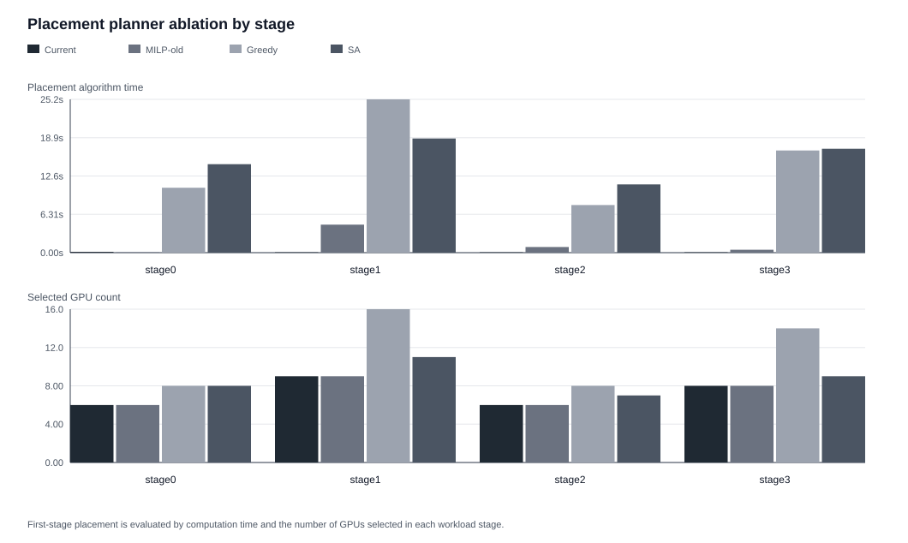
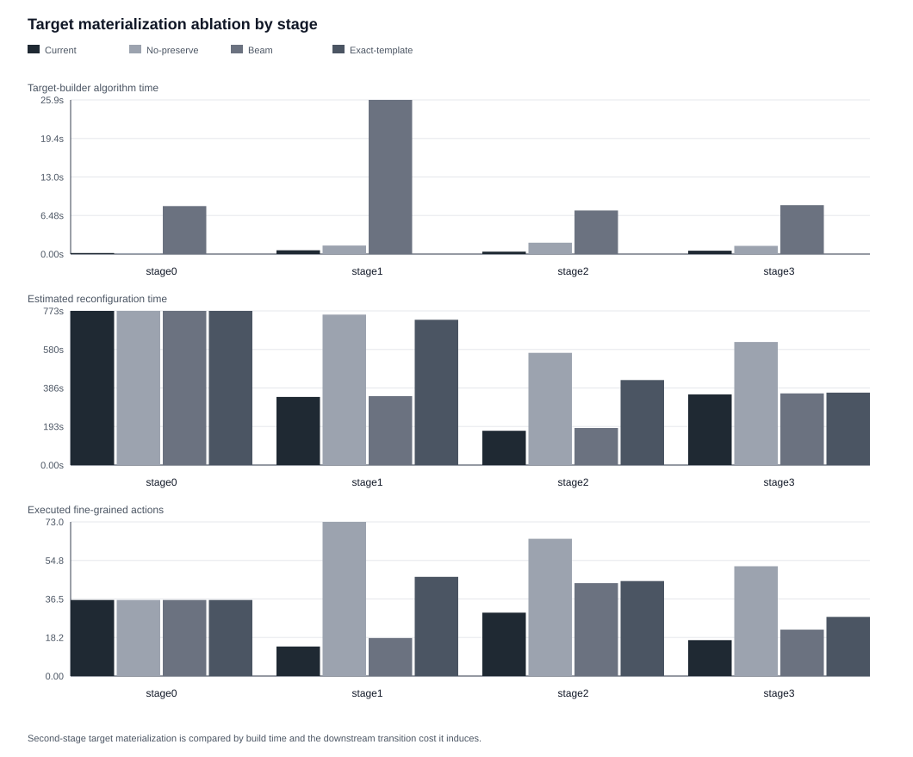
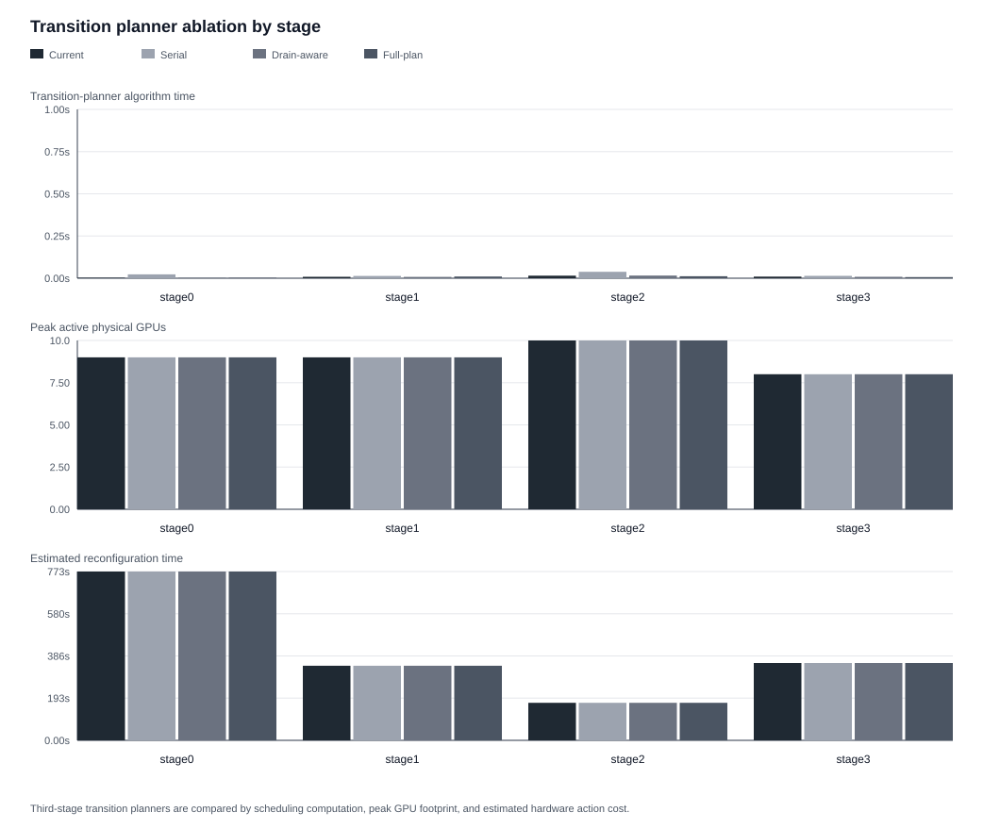
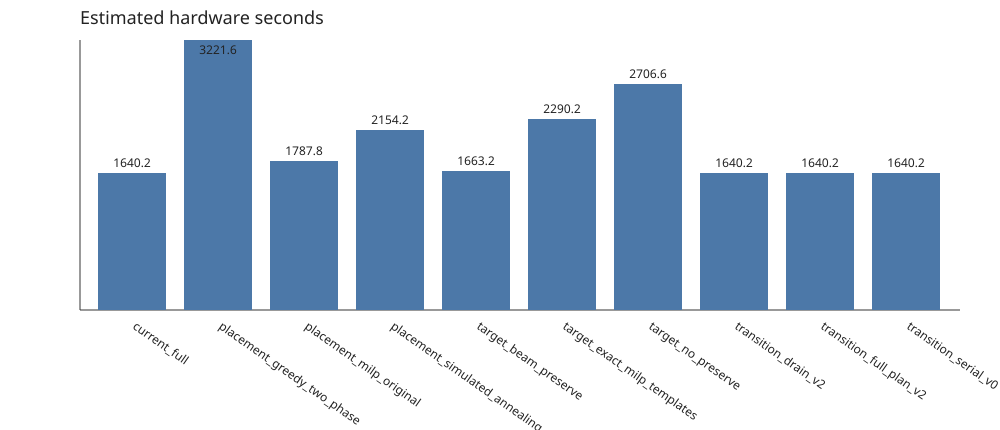
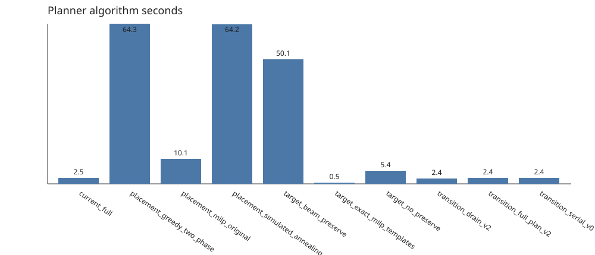
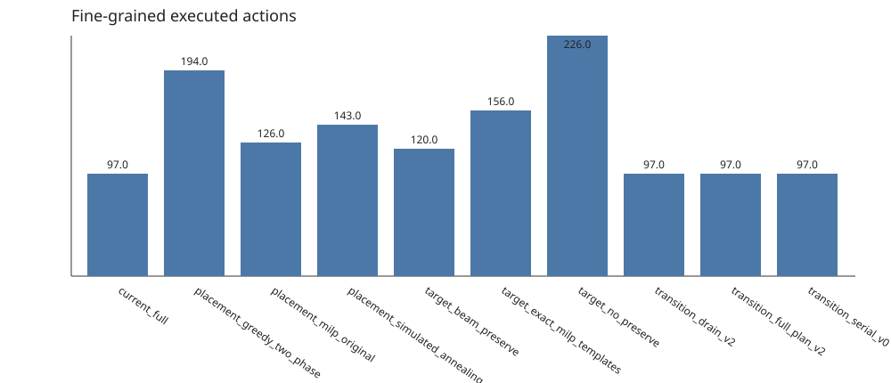
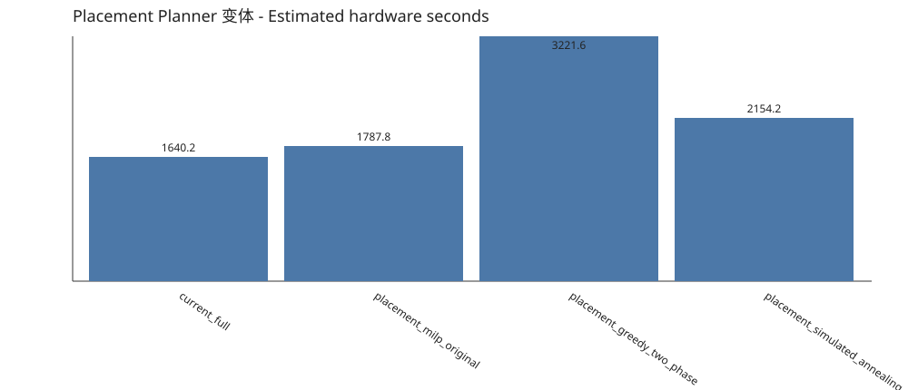
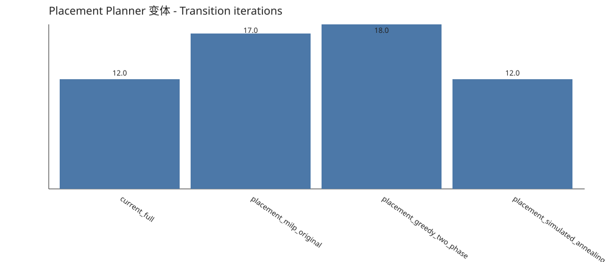
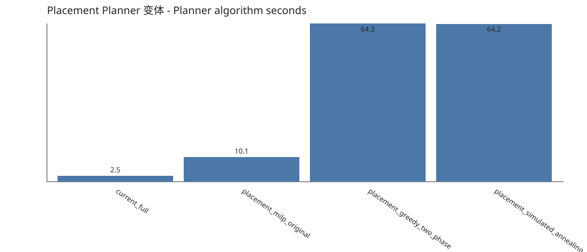
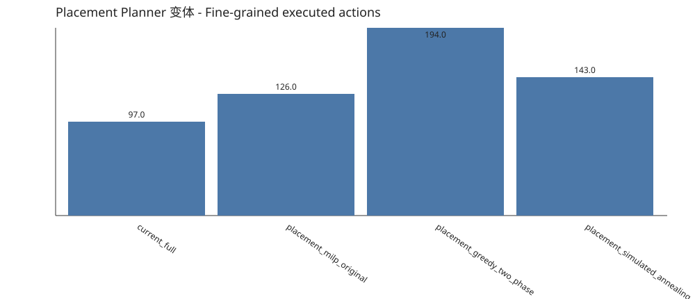
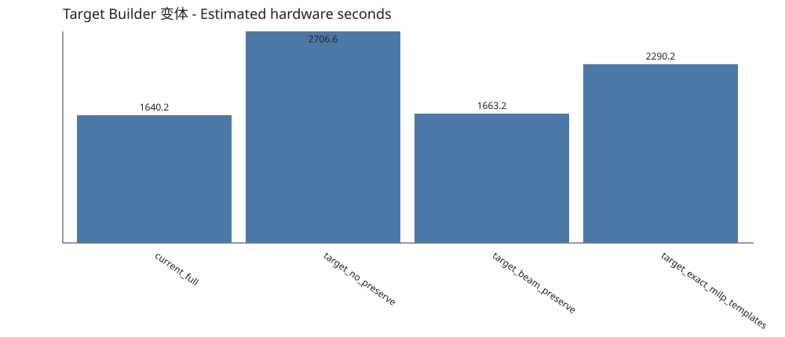
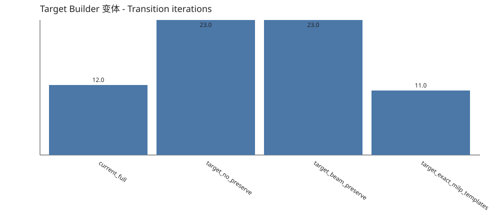
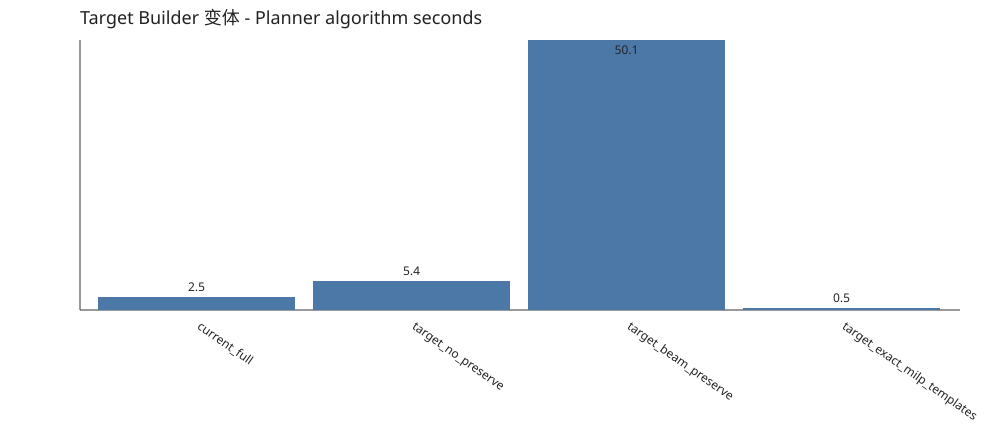
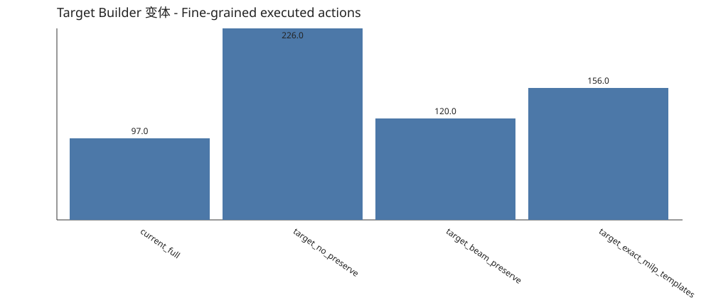
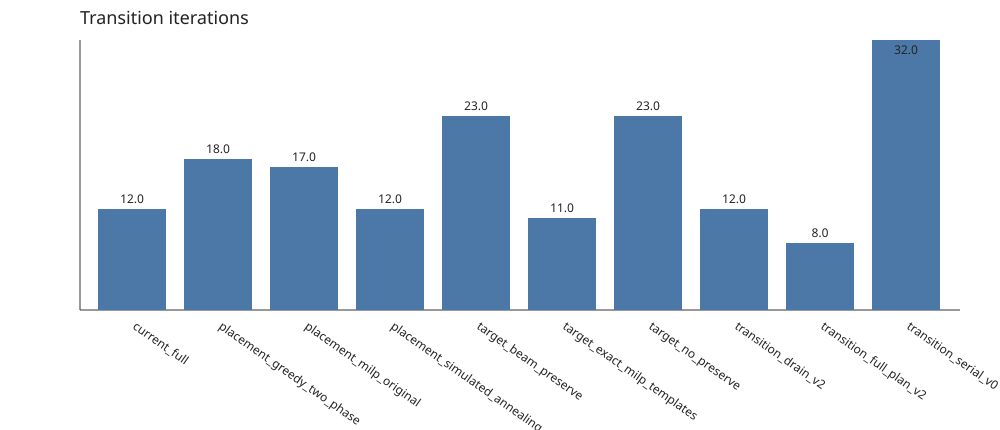
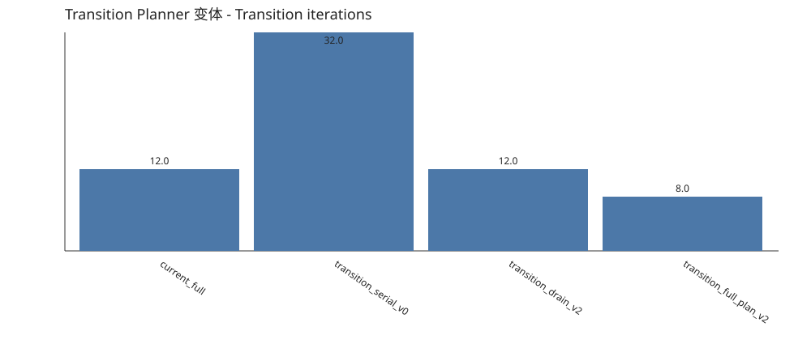
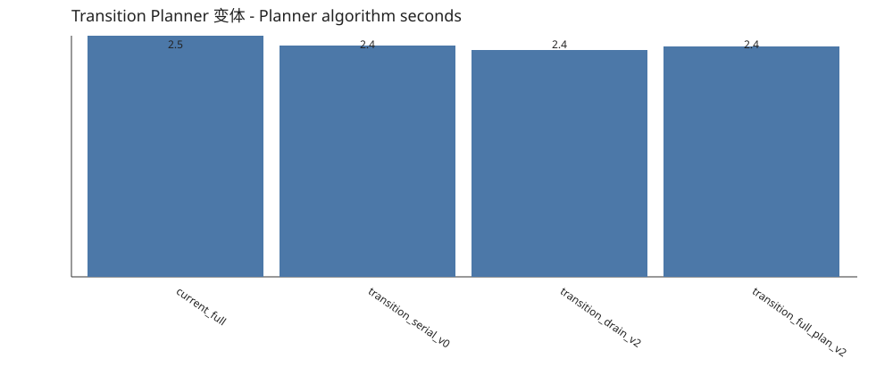
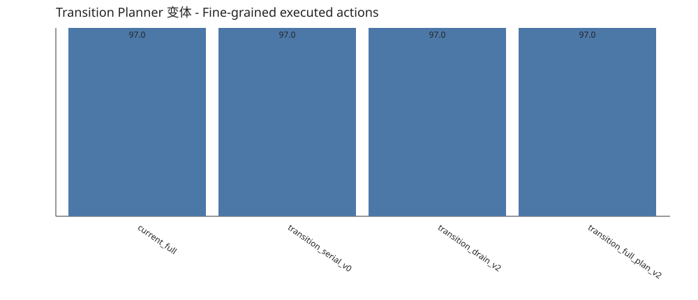